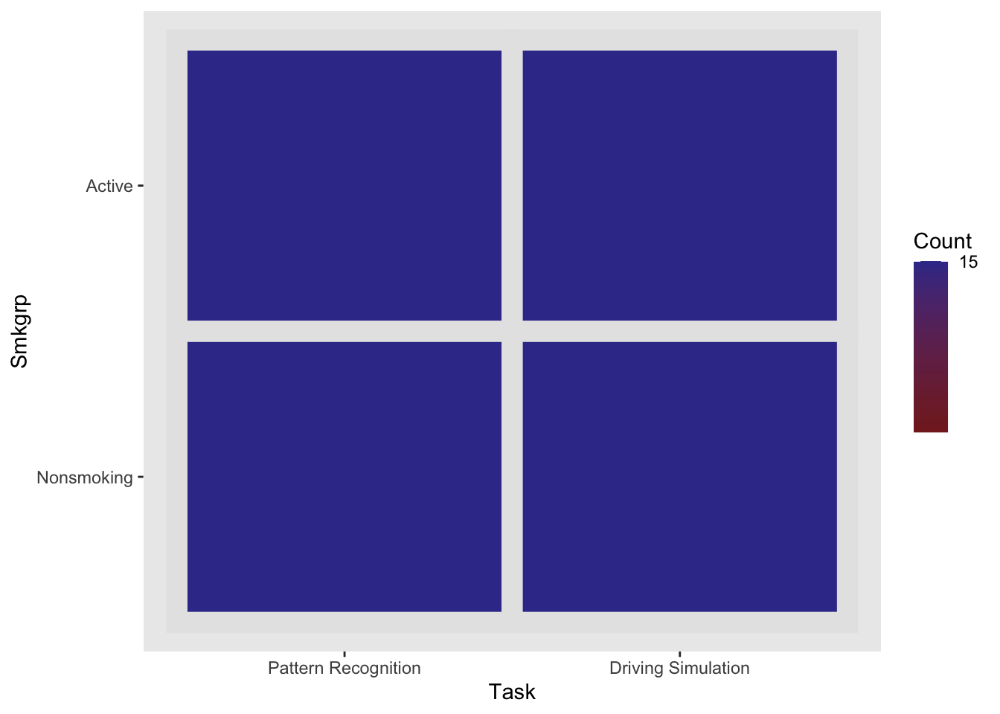
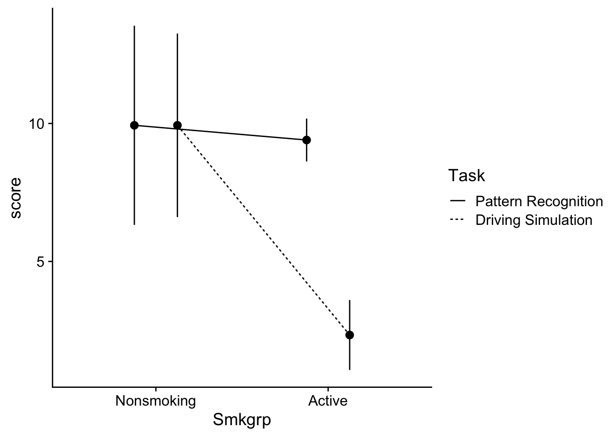
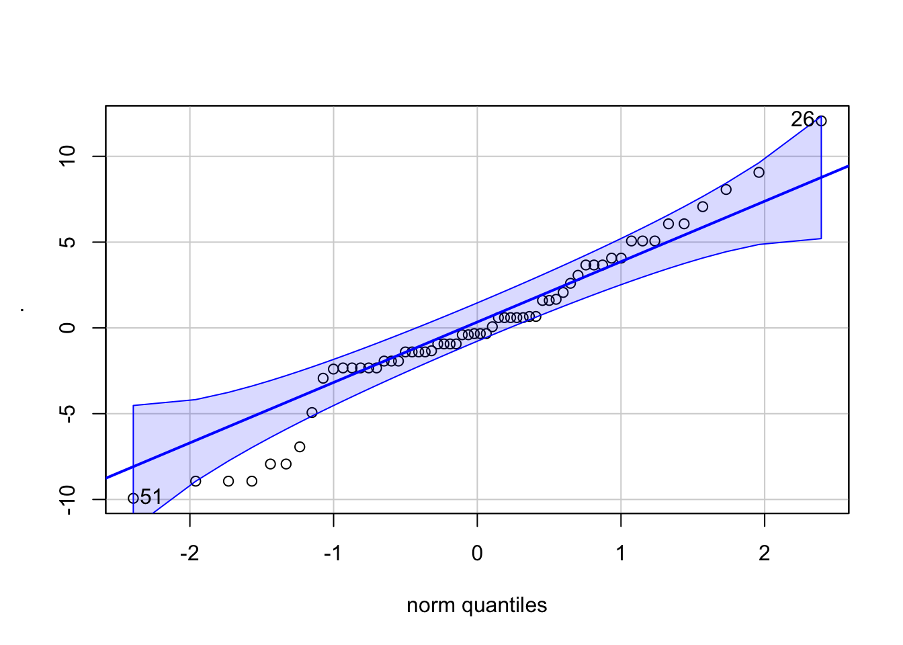
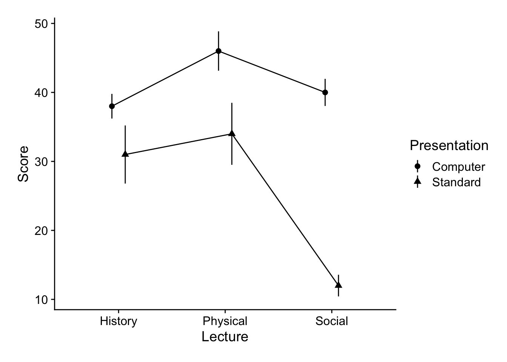
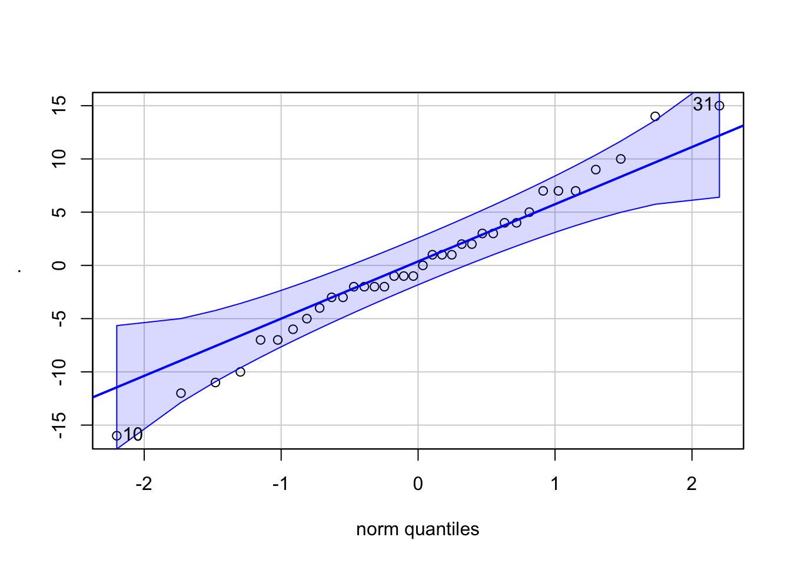

Analysis of Variance: the Factorial ANOVA - Interactions & Simple Effects ANOVA
This walkthrough is a continuation of our focus on Factorial ANOVA. Here we’re asking the question “what to do if you have an interaction”. As we have discussed when running a factorial ANOVA, your first question should be “do I have an interaction”. If you do have an interaction then you need to examine that interaction in detail. How do we do this? Well, let’s think about what that interaction means. As an example, let’s revisit some of the data (or situations) from the previous walkthrough. We’ll also progressively ramp-up the complexity of our designs.
This write-up requires the following packages:
Example 1: a 2×2 ANOVA
To start let’s look at the first example from our previous walkthrough. To remind ourselves of the particulars, our example ANOVA comes from a study testing the effects of smoking on performance in different types of putatively (perhaps I’m showing my theoretical biases here) information processing tasks.
There were 3 types of cognitive tasks:
1 = a pattern recognition task where participants had to locate a target on a screen;
2 = a cognitive task where participants had to read a passage and recall bits of information from that passage later;
3 = participants performed a driving simulation.
Additionally, 3 groups of smokers were recruited
1 = those that were actively smoking prior to and during the experiment;
2 = those that were smokers, but did not smoke 3 hours prior to the experiment;
3 = non-smokers.
As this is a between design, each participant only completed one of the cognitive tasks. For this first example we are going to drop the second levels of each IV (Cognitive and Delayed groups respectively).
Let’s build the data frame (see previous walkthrough for more detail)
dataset <- read_delim("https://www.uvm.edu/~statdhtx/methods8/DataFiles/Sec13-5.dat", "\t", escape_double = FALSE, trim_ws = TRUE)Rows: 135 Columns: 4
── Column specification ────────────────────────────────────────────────────────
Delimiter: "\t"
dbl (4): Task, Smkgrp, score, covar
ℹ Use `spec()` to retrieve the full column specification for this data.
ℹ Specify the column types or set `show_col_types = FALSE` to quiet this message.dataset$PartID <- seq_along(dataset$score)
dataset$Task <- recode_factor(dataset$Task, "1" = "Pattern Recognition", "2" = "Cognitive", "3" = "Driving Simulation")
dataset$Smkgrp <- recode_factor(dataset$Smkgrp, "3" = "Nonsmoking", "2" = "Delayed", "1" = "Active")
dataset_2by2 <- filter(dataset, Smkgrp!="Delayed" & Task!="Cognitive")
dataset_2by2# A tibble: 60 × 5
Task Smkgrp score covar PartID
<fct> <fct> <dbl> <dbl> <int>
1 Pattern Recognition Active 9 107 1
2 Pattern Recognition Active 8 133 2
3 Pattern Recognition Active 12 123 3
4 Pattern Recognition Active 10 94 4
5 Pattern Recognition Active 7 83 5
6 Pattern Recognition Active 10 86 6
7 Pattern Recognition Active 9 112 7
8 Pattern Recognition Active 11 117 8
9 Pattern Recognition Active 8 130 9
10 Pattern Recognition Active 10 111 10
# ℹ 50 more rowsAnd let’s take a look at our cells to ensure that they have similar numbers:
Task Smkgrp score covar
Pattern Recognition:30 Nonsmoking:30 Min. : 0.00 Min. : 64.00
Cognitive : 0 Delayed : 0 1st Qu.: 2.75 1st Qu.: 98.75
Driving Simulation :30 Active :30 Median : 8.00 Median :111.00
Mean : 7.90 Mean :110.73
3rd Qu.:11.00 3rd Qu.:123.00
Max. :22.00 Max. :168.00
PartID
Min. : 1
1st Qu.: 27
Median : 68
Mean : 68
3rd Qu.:109
Max. :135 ez::ezDesign(data = dataset_2by2,
x=Task, # what do you want along the x-axis
y=Smkgrp, # what do you want along the y-axis
row = NULL, # are we doing any sub-divisions by row...
col = NULL) # or column
Interaction plots
Interaction plots take into consideration the influence of each of the IVs on one another—in this case the mean and CI of each smoking group (Active v. Nonsmoking) as a function of Task (Driving Simulation v. Pattern Recognition). For example, a line plot might look like this:
# line plot
ggplot(data = dataset_2by2, mapping=aes(x=Smkgrp,
y=score,
group=Task)) + # grouping the data by levels of Task
stat_summary(geom="pointrange",
fun.data = "mean_cl_normal",
position=position_dodge(.5)) + # dodging position so points do not overlap with one another
stat_summary(geom = "line",
fun = "mean",
position=position_dodge(.5),
aes(linetype=Task)) + # each level of Task gets its own linetype
theme_cowplot()
ANOVA model
As before we can build our ANOVA model and test it against the requisite assumptions

[1] 26 51Levene's Test for Homogeneity of Variance (center = median)
Df F value Pr(>F)
group 3 6.1 0.001149 **
56
---
Signif. codes: 0 '***' 0.001 '**' 0.01 '*' 0.05 '.' 0.1 ' ' 1As in the last walkthrough we’ll ignore the issues with homogeneity. Let’s run our ANOVA:
term | df | sumsq | meansq | statistic | p.value | etasq | partial.etasq | omegasq | partial.omegasq | epsilonsq | cohens.f | power
----------------------------------------------------------------------------------------------------------------------------------------------
Smkgrp | 1 | 248.067 | 248.067 | 11.569 | 0.001 | 0.136 | 0.171 | 0.123 | 0.150 | 0.124 | 0.455 | 0.925
Task | 1 | 187.267 | 187.267 | 8.733 | 0.005 | 0.103 | 0.135 | 0.090 | 0.114 | 0.091 | 0.395 | 0.840
Smkgrp:Task | 1 | 187.267 | 187.267 | 8.733 | 0.005 | 0.103 | 0.135 | 0.090 | 0.114 | 0.091 | 0.395 | 0.840
Residuals | 56 | 1200.800 | 21.443 | | | | | | | | | Adressing the interaction
This model yields a Smoking group by task interaction! Looking at our interaction plot above, we shouldn’t have been too surprised by this. We see that for Non smokers, there is minimal difference between the two cognitive tasks, whereas with the smoking group, the scores of the Driving Simulation group were much lower than the Pattern recognition group. Another, equally valid way of interpreting the data is that while Pattern recognition scores were unaffected by smoking condition, Driving simulation scores were drastically decreased for smokers compared to non-smokers. While both interpretations are equally valid in the neutral sense, one may be more interesting to you the researcher (this is where your a priori hypotheses would come into play). Is it more interesting that Non smokers performed equivalently on both types of cognitive tasks while active smokes performed better on the pattern recognition task than the driving task OR is it more interesting that Pattern recognition scores where unaffected by smoking whereas driving simulation scores were?
I bring this up, as while it may be appropriate to mention both trends, you typically only TEST for one or the other. Remember, there is a cost for every test that your run—you need to adjust for familywise error.
In this case I’m going test the second variant, testing how performance on each cognitive task changes by virtue of smoking group. To run a post-hoc ANOVA. This can be accomplished sending our model to emmeans(). Below, the | operator can be understood as “nested within”. So the model is saying take a look at how smoking group scores change on each level of task.
Task = Pattern Recognition:
Smkgrp emmean SE df lower.CL upper.CL
Nonsmoking 9.93 1.2 56 7.5382 12.33
Active 9.40 1.2 56 7.0049 11.80
Task = Driving Simulation:
Smkgrp emmean SE df lower.CL upper.CL
Nonsmoking 9.93 1.2 56 7.5382 12.33
Active 2.33 1.2 56 -0.0618 4.73
Confidence level used: 0.95 FWIW, if it helps, the following is equivalent:
Task = Pattern Recognition:
Smkgrp emmean SE df lower.CL upper.CL
Nonsmoking 9.93 1.2 56 7.5382 12.33
Active 9.40 1.2 56 7.0049 11.80
Task = Driving Simulation:
Smkgrp emmean SE df lower.CL upper.CL
Nonsmoking 9.93 1.2 56 7.5382 12.33
Active 2.33 1.2 56 -0.0618 4.73
Confidence level used: 0.95 In either case, Smoking Group only has 2-levels I can send this to a pairwise test:
Task = Pattern Recognition:
contrast estimate SE df t.ratio p.value
Nonsmoking - Active 0.533 1.69 56 0.315 0.7536
Task = Driving Simulation:
contrast estimate SE df t.ratio p.value
Nonsmoking - Active 7.600 1.69 56 4.495 <.0001The output above shows what we expect, that for Pattern recognition groups, scores are indifferent to whether participants are smokers or not, where with the Driving simulation groups, Nonsmokers performed much better.
2 × 3 ANOVA
Things become slightly more complex when on of our factors has 3 or more levels. To see this let’s revisit the second example from the previous walkthrough:
Background: Given the ease of access for new technologies and increasing enrollment demands, many university are advocating that departments switch over to E-courses, where students view an online, pre-recorded lecture on the course topic in lieu of sitting in a classroom in a live lecture. Given this push, a critical question remains regarding the impact of E-courses on student outcomes. More it may be the case that certain subject content more readily lends itself to E-course presentations than other subjects. To address this question we tested students performance on a test one week after participating in the related lecture. Lectures were either experienced via online (Computer) or in a live classroom (Standard). In addition, the lecture content varied in topic (Physical science, Social science, History)
Here’s the data, where Score represents performance:
Rows: 36 Columns: 4
── Column specification ────────────────────────────────────────────────────────
Delimiter: ","
chr (2): Lecture, Presentation
dbl (2): subID, Score
ℹ Use `spec()` to retrieve the full column specification for this data.
ℹ Specify the column types or set `show_col_types = FALSE` to quiet this message.Plotting the data and descriptive stats
Here’s what our results look like. I’ll revisit the particulars on constructing this sort of plot in the next walkthrough. For now, all we are doing is extending the plotting methods that you have been using for the past few weeks. The important addition here is the addition of group = in the first line the ggplot.
For example:
indicates that we are:
using the
datasetdata setputting first IV,
Lecture, on the x-axisputting our dv,
Scoreon the y-axisand grouping our data by our other IV,
Presentation
This last bit is important as it makes clear that the resulting mean plots should be of the cell means related to Lecture x Presentation. Note that in the plot below, I am also adjusting the shape of the data points by Presentation (done in stat_summary .
ggplot(dataset,mapping = aes(x = Lecture,y = Score, group=Presentation)) +
stat_summary(geom = "pointrange",
fun.data = "mean_se",
position = position_dodge(.25), # dodge to prevent overlap
aes(shape=Presentation)) + # each level of presentation gets a shape
stat_summary(geom = "line", fun.y="mean", position = position_dodge(.25)) +
theme_cowplot() +
theme(plot.margin=unit(c(.25,.25,.25,.25),"in"))Warning: The `fun.y` argument of `stat_summary()` is deprecated as of ggplot2 3.3.0.
ℹ Please use the `fun` argument instead.
And now getting the cell means and marginal means. Remember that analysis of the marginal means is what is tested in the main effects. The test for an interaction focuses on the cell means. Here we are using the summarySE function from the Rmisc package. I find it to be more efficient than psych::describeBy() and its useful next week when we do Repeated Measures ANOVA
# cell means:
summarySE(data = dataset,measurevar = "Score", groupvars = c("Presentation","Lecture")) Presentation Lecture N Score sd se ci
1 Computer History 6 38 4.381780 1.788854 4.598397
2 Computer Physical 6 46 6.985700 2.851900 7.331042
3 Computer Social 6 40 4.816638 1.966384 5.054751
4 Standard History 6 31 10.315038 4.211096 10.824968
5 Standard Physical 6 34 11.009087 4.494441 11.553328
6 Standard Social 6 12 3.847077 1.570563 4.037260 Lecture N Score sd se ci
1 History 12 34.5 8.393721 2.423058 5.333116
2 Physical 12 40.0 10.795622 3.116428 6.859211
3 Social 12 26.0 15.201675 4.388345 9.658683 Presentation N Score sd se ci
1 Computer 18 41.33333 6.249706 1.473070 3.107906
2 Standard 18 25.66667 13.105903 3.089091 6.517412the Omnibus ANOVA (and assumption tests)
The very first ANOVA model that we build crosses all of our independent variables. This is the omnibus ANOVA. Let’s build this model and run our assumption checks
omnibus_aov <- lm(Score~Lecture*Presentation, dataset)
# check the normality assumption of the residuals:
omnibus_aov$residuals %>% car::qqPlot()
[1] 10 31Levene's Test for Homogeneity of Variance (center = median)
Df F value Pr(>F)
group 5 1.6132 0.1868
30 Good to go, let’s check our results:
term | df | sumsq | meansq | statistic | p.value | etasq | partial.etasq
------------------------------------------------------------------------------------------
Lecture | 2 | 1194 | 597.000 | 10.737 | < .001 | 0.206 | 0.417
Presentation | 1 | 2209 | 2209.000 | 39.730 | < .001 | 0.381 | 0.570
Lecture:Presentation | 2 | 722 | 361.000 | 6.493 | 0.005 | 0.125 | 0.302
Residuals | 30 | 1668 | 55.600 | | | | Looking at the ANOVA: Our assumptions tests check out, and our ANOVA reveals two main effects and in interaction. Looking back at the plot (always, always plot before you think about doing any sort of follow-ups!!) it is fairly apparent what is happening—when moving from one lecture to the next, we see a much more dramatic decrease in score for the Social group in the Standard presentation group compared to the Computer presentation. That is, moving from left to right the pattern of change is different for the Standard group, compared to the Computer group. This is what our eyeball test is telling us—we need to confirm it with some stats! There are two ways to address this interaction, each involves sub-setting the data for further analysis.
As mentioned above, when you have an interaction, you proceed by testing for differences between means for one condition, on each individual level of the other. For example, we can test for and effect of Lecture Type when the Presentation is Computer, and effect of Lecture Type when the Presentation is Standard. In this case you would run two separate simple effects ANOVAs, each taking a look at changes for each line in the plot above.
–OR–
You could check for difference between Presentations on each Lecture type. Here you would be comparing Computer v Standard in each of the Lecture conditions. This would involve running three ANOVAs each checking for the Presentation differences (circle v. triangle) present at History, Physical, and Social.
Which you choose, ultimately depends on which narrative you are trying to convey in your data. Here it may make sense to do the former. That is eyeballing the data it looks like the means in the Computer presentation level are not as different from one another as the Standard presentation.
Running the simple effects ANOVA in 6 steps:
Given that we have elected to take a look at Lecture on each level of Presentation, we would need to run 2 simple effects ANOVAs. This is because breaking the omnibus in this way still leaves in each subsequent analysis a comparison of the 3 levels of Lecture. Basically we are running 2 separate One-way ANOVAs:
- the first looks at Scores~Lecture when Presentation = Computer and
- the second looks at Scores~Lecture when Presentation = Standard
There is, however, one major caveat. When you run the follow-up ANOVA you need to use the error terms from your omnibus ANOVA. That is your simple effects ANOVA calls for the omnibus ANOVA errors: Sum of Squares, Mean Square Error, and denominator degrees of freedom.
What this means is that if you were to actually run this data as two distinct One-Way ANOVAs, the F-value (and subsequent p-values) that you get would be WRONG. For example simply running a filter and then ANOVA like this will not work:
# this is wrong... don't do this!!!
lm(Score~Lecture, dataset %>% filter(Presentation=="Computer")) %>%
sjstats::anova_stats() %>% dplyr::select(1:8) %>% pander| term | df | sumsq | meansq | statistic | p.value | etasq | |
|---|---|---|---|---|---|---|---|
| Lecture | Lecture | 2 | 208 | 104 | 3.421 | 0.06 | 0.313 |
| …2 | Residuals | 15 | 456 | 30.4 | NA | NA | NA |
| partial.etasq | |
|---|---|
| Lecture | 0.313 |
| …2 | NA |
A quick glance at the table above reveals the error. You’ll notice that the denominator df are 15 where in the omnibus ANOVA they were 30. Fixing this isn’t as simple as adjusting the denominator df and looking it up on the F-table. This involves a series of calculations that results in a different F-ratio as well. For the sake of clarity I’m going to show you how to do this “by hand” and then show you how you’ll never need to do it “by hand”
There are several steps that need to be run for each simple effects ANOVA:
step 1: get the omnibus ANOVA:
Assuming you haven’t already we need to run the omnibus ANOVA. Let’s get this again
step 2: get the MSError, Error df, and Error SS from omnibus ANOVA
We can pull these values directly from the sjstats::anova_stats() output. It easier to just save this output to an object first. We can then check its attributes()
$names
[1] "term" "df" "sumsq" "meansq"
[5] "statistic" "p.value" "etasq" "partial.etasq"
[9] "omegasq" "partial.omegasq" "epsilonsq" "cohens.f"
[13] "power"
$class
[1] "sj_anova_stat" "data.frame"
$row.names
[1] "Lecture" "Presentation" "Lecture:Presentation"
[4] "...4" In the above list, we are interested in sumsq and df. We need to index each by number. In this case residuals are on the 4th line:
step 3: subset your data accordingly
In order to do this we will need to subset the data. For example I am interested in running my follow-ups on Computer data and Standard data separately, so my first move is to perform this subset:
(FWIW you could also do the subsetting in the lm() call)
step 4: run your One-way simple effects ANOVA(s)
Here I’m focusing on the computer_data for my example. You can return to the standard_data later.
computer_aov_values <- lm(Score~Lecture, dataset %>% filter(Presentation=="Computer")) %>%
sjstats::anova_stats()
computer_aov_valuesterm | df | sumsq | meansq | statistic | p.value | etasq | partial.etasq | omegasq | partial.omegasq | epsilonsq | cohens.f | power
-----------------------------------------------------------------------------------------------------------------------------------------
Lecture | 2 | 208 | 104.000 | 3.421 | 0.060 | 0.313 | 0.313 | 0.212 | 0.212 | 0.222 | 0.675 | 0.635
Residuals | 15 | 456 | 30.400 | | | | | | | | | step 5: get the treatment MS, df, SS, and F-value from your simple ANOVA
As before, this can be done by calling attributes from our simple ANOVA, computer_aov. We need to grab the following values related to the treatment:
step 6: make our corrections
As I noted above the F-value, p-value, and effect size (pes, \(\eta_p^2\)) that you originally obtained in the simple effects computer_aov are not correct. We need to make the appropriate corrections. This can be done my hand, using the values we’ve extracted and calculated above:
# calculate F using simple treatment MS and omnibus MSE
corrected_f <- simple_ms/omnibus_mse
# the pf function calculates the cummulative p.value using the corrected_f and appropriate degrees of freedom. Since its cumulative we subtract this result from 1:
corrected_p <- (1-pf(corrected_f,df1 = simple_df,df2 = omnibus_df))
# calculate the pes by using simple treatment SS and omnibus MSE:
corrected_pes <- (simple_ss/(simple_ss+omnibus_ss_error))Congrats!! You have made the appropriate corrections! Taking a look at your corrected result it appears that we should accept the null hypothesis of no difference in means on the computer data. As with posthoc comparisons, effect sizes for simple effects ANOVA are somewhat debatable, but this might be the most appropriate way to do this.
the emmeans() way
the simple effects ANOVA
In years past, I would have shown you how to create your own function to do this, but instead we can also use emmeans() to conduct simple effects follow-ups. In this case we need to tell emmeans() how to parse our omnibus.aov model. Here we are telling it to look at the effects of Lecture on each level of Presentation.
We can then pipe our simple effects emmeans into this call to run BOTH simple effects ANOVA
Presentation df1 df2 F.ratio p.value note
Computer 2 30 1.871 0.1716 d
Standard 2 30 15.360 <.0001 d
d: df1 reduced due to linear dependence Based on this output we have a simple effect for standard but not computer.
effects size (partial eta sq) for the ANOVA
Instead of calculating partial eta squared for the simple effects ANOVA by hand, we can use the F_to_eta2 function from the effectsize package. FWIW the effectsize package has a host of other functions for calculating effect sizes. Here, F_to_eta2 takes three arguments, the f value of the (simple effects) ANOVA, and its numerator (treatment) and denominator (error) dfs. Looking at the output from the last section, these values are f = 15.36, df = 2, df_error = 30:
post-hoc analyses on the simple effects ANOVA
Given that we have a simple effect for standard, we need to run pairwise posthoc analyses. Given that our joint test suggested no simple effect on Computer, we can just ignore that part of the output.
Presentation = Computer:
contrast estimate SE df t.ratio p.value
History - Physical -8 4.31 30 -1.858 0.1684
History - Social -2 4.31 30 -0.465 0.8883
Physical - Social 6 4.31 30 1.394 0.3568
Presentation = Standard:
contrast estimate SE df t.ratio p.value
History - Physical -3 4.31 30 -0.697 0.7671
History - Social 19 4.31 30 4.413 0.0003
Physical - Social 22 4.31 30 5.110 <.0001
P value adjustment: tukey method for comparing a family of 3 estimates Given our latter result above we see that in the Standard presentation, scores based on Social lectures were significantly less than the other two.
If we wanted to calculate any effect sizes for the parwise comparisons (corrected Cohen’s D) we could use the function we learned last week. Again, ignore Computer as it was non-significant.
eff_size(object = simple_effects_by_presentation,
sigma = sigma(omnibus_aov),
edf = df.residual(omnibus_aov))Presentation = Computer:
contrast effect.size SE df lower.CL upper.CL
History - Physical -1.073 0.594 30 -2.285 0.140
History - Social -0.268 0.578 30 -1.449 0.913
Physical - Social 0.805 0.587 30 -0.393 2.003
Presentation = Standard:
contrast effect.size SE df lower.CL upper.CL
History - Physical -0.402 0.580 30 -1.586 0.782
History - Social 2.548 0.664 30 1.191 3.905
Physical - Social 2.950 0.692 30 1.538 4.363
sigma used for effect sizes: 7.457
Confidence level used: 0.95 Interpreting these results:
Given everything above, there are several things that this data are telling us:
- Main effect for computer: on average people tended to perform better in the Computer presentation
-
Main effect for Lecture: this main effect is not as clear. Overall, people may have performed worst on the
Sociallecture content, it’s quite apparent that the presence of this effect is muddled by presentation type. This is what the presence of our interaction is telling us. - Simple effect of lecture type via computer: No differences in means suggests that people perform equally well on all lecture content types when administered via computer
- Simple effect of lecture type via standard lecture: significant simple effect and subsequent posthocs demonstrate that while students perform equally as well on Physical Science and History content via standard lectures, they perform worse on tests of Social science content.
Given this pattern of results two major conclusions become apparent:
- First, students overall perform better via Computer. This was the case for all three lecture types. True, how much better varies by condition, but in all cases scores were higher.
- Second, while performance via Computer was indifferent to Lecture type (all lecture content scores were nearly equal) there was an attrition for Social science content when provided via standard lecture.
From this one might conclude that administering content via E-course is better for student outcomes, especially if the subject content is in the Social Sciences! Also, I think that one of the lessons of 2020 is that this result is demonstrably FALSE ;).
Example write-up:
To test for the effects of Presentation style (Standard, Computer) and Lecture Type (Physics, History, Social) we ran a 2 × 3 factorial ANOVA. This ANOVA revealed main effects for both Presentation style, \(F(1,30)=39.73, p<.001, \eta_p^2=.57\), and Lecture type, \(F(2,30)=10.74, p<.001, \eta_p^2=.42\).
As shown in Figure 1, these effects we qualified by a Presentation style × Lecture type interaction, \(F(2,30)=6.49, p=.005, \eta_p^2=.30\). Differences in Lecture type were only observed when material was presented in the Standard presentation, \(F(2,30)=15.36, p<.001, \eta_p^2=.51\), where scores from the Social lecture were significantly different from the remaining two (Tukey HSD, p< .05). No differences were observed when the material was presented via computer (p>.05). Overall, participants performed better when the material was presented via computer (M±SD: 41.33 ± 6.25) compared to standard presentations (25.67 ± 13.11).
One thing you may notice is that I still stressed the main effect. This is to stress to the reader that presentation type did make a difference.
Performing this in SPSS (video)
As I mentioned in class, given that we are doing our analyses via programming, we have the luxury of have a function in emmeans()that can make all of our simple effects adjustments for us. If you are using the GUI method in SPSS, you don’t have this luxury (although you can certainly create a similar function in SPSS!). Fear not, here I walk you through how to do this in SPSS, assuming you have Microsoft Excel. Check out this vid on youtube: https://youtu.be/0Y-dVv-UCz4.